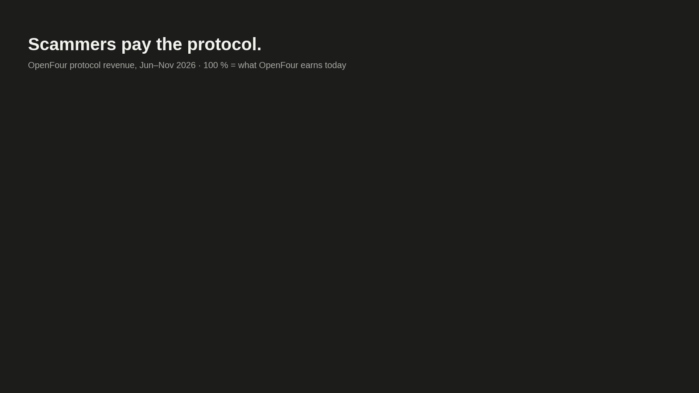
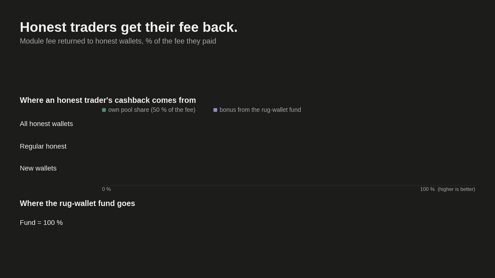
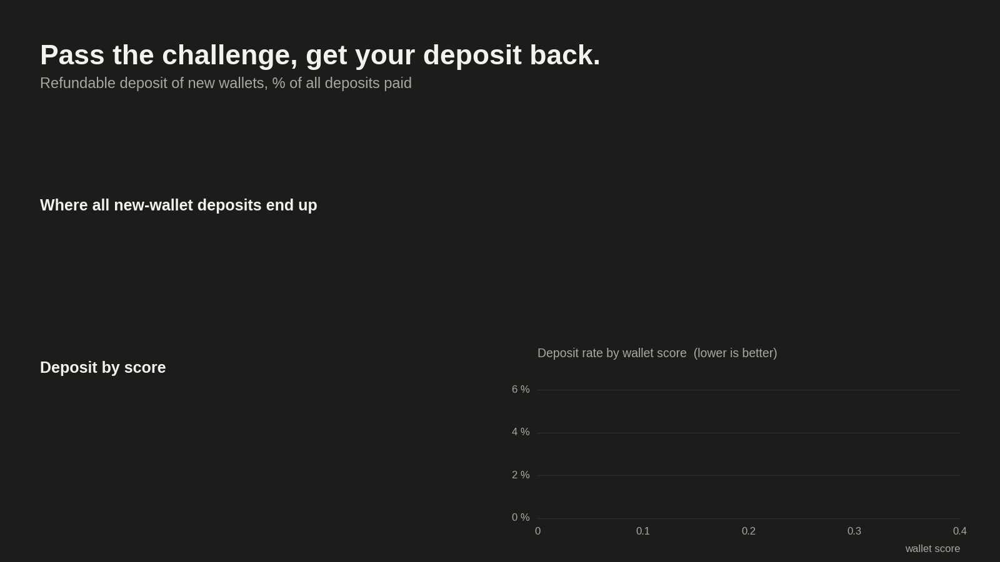

市场不需要又一个发射台。
不是新的发射机制，也不是又一种费用、代币或分红的分配方式。
先把市场上的跑路和骗局清理掉，新的机制才能真正发挥作用。
陌生钱包，直到现在。
如今在发射台眼里，所有钱包都一模一样。有了这个模块，每个钱包都带有信誉分和对应费率。下面是真实钱包，分数读取自我们的测试网注册表。
真实的 BSC 主网钱包，其分数已载入测试网注册表。测试网 RPC 响应后，卡片会更新为注册表中的实时数值。
一个信誉分，一条费率曲线，适用每次发射。
历史变成分数
交易量、活跃度、持仓时间、已验证身份以及过往的跑路参与情况，共同构成 0 到 1 的信誉分。权重由协议设定。
分数决定费率
OpenFour 读取签署交易的钱包并据此定价。受信任的钱包费率更低，新钱包和被标记的钱包费率更高。发送前无需额外调用，终端无需任何改动。
低分钱包缴纳押金
低分钱包在买入时需缴纳可退还的押金：分数为 0 时为 6.4 %，随分数上升平滑递减，到 0.4 时降为零。诚实交易后押金退还；若该钱包参与跑路，押金将被没收并转入骗子基金。
跑路钱包每笔交易都付罚金
罚金随钱包的跑路分量增长，买入和卖出最高均为 6.4 %。它仍然可以买卖：卖出从不被禁止，只是被定价。
骗子补偿诚实钱包
罚金和被没收的押金汇入骗子基金。诚实钱包从中获得返现和奖励，但总额不会超过其已缴纳的费用。
协议费用保持不变
OpenFour 自身的费用完全不变。本模块在其之上叠加第二层基于信誉的费用。
完整流程，跑在测试网上。
诚实钱包、捆绑钱包砸盘、标记、罚金、押金没收，以及诚实钱包领取返现。均为真实交易，录自我们的实际运行。
查询任意钱包，实时。
粘贴一个地址即可。页面直接在您的浏览器中调用我们部署在 BSC 测试网上的注册表，无需连接钱包，中间也没有我们的服务器。
请选择钱包或粘贴地址。
链 97 · 注册表 0x7231682cdfed6d9d401efb8a2002b026bcbbc105 · RPC bsc-testnet-rpc.publicnode.com
交易凭证
模拟中的关键交易。每个链接都会打开 testnet.bscscan.com。
| # | 步骤 | 交易 |
|---|---|---|
| 01 | 诚实钱包首次买入 新钱包首次买入并缴纳可退还的押金。 | 0x09d30f42…807833 |
| 02 | 捆绑钱包砸盘 四个关联钱包一起买入同一个代币，然后在同一区块内卖出。 | 1 0x5f2b384c…ef42bb · 2 0x43f5991d…14a6e0 · 3 0xa83d610d…ee2891 · 4 0xe2cf9600…0e592c |
| 03 | 发布标记 砸盘后，我们的发布器立即在链上标记该捆绑钱包组。 | 0x2e3d4e83…e3cd7d |
| 04 | 同一钱包，标记前后 同一个捆绑钱包：标记前 50 bps，标记后 690 bps。它的卖出被允许，没有被禁止。 | 标记前买入 0xfe2e3329…91ddfd标记后买入 0x5491c574…637839标记后卖出 0x96f17b72…d4258f |
| 05 | 押金被没收 被标记的钱包损失押金和返现权，全部进入骗子基金。 | 1 0xe57bc3b5…78d771 · 2 0xaba3fd8c…54e996 · 3 0xd7a7e35d…b05daa · 4 0xaa2c1ce3…9e45df |
| 06 | 诚实钱包领取 诚实钱包取回押金，并从基金中领取返现和奖励。 | A 0x9d8ab38f…34814c · B 0xa2d4bd08…a08d3e · 新手 0x18612b87…22bcec |
我们不关门，我们定价。
文件、冻结、限额
- 交易前须提交 KYC 文件
- 限额和冻结由运营方决定
- 运营方可以冻结你的资金
- 诚实交易者流失，成交量下降
每个交易者都留下
- 无需文件，只看链上历史
- 什么都不禁止，卖出永远不被禁止
- 没有冻结：标记只改变价格
- 骗子付费，诚实钱包获得返现
数据中的经济模型。



目前还做不到的事。
分数来自我们的服务
分数由我们的服务发布并签名，规则公开，任何人都可以用公开数据重新计算。分数并非在链上计算，ZK 证明已列入路线图。
仅限测试网
这里的一切都运行在 BSC 测试网上，身份代币在测试网上是替代品。没有任何内容运行在官方的、经过审计的 OpenFour 注册表上。
AI 审查，未经人工审计
代码经过多个 AI 模型审查，每轮后均已修复。这不等同于人工审计。
转账归集式跑路
通过普通转账把代币归集到同一个钱包的跑路，目前尚无法检测。转账费会在迁移前后对其定价，但检测器不会标记它们。
下一步 为每个信誉分生成零知识证明；迁移后在 PancakeSwap Infinity hook 中沿用同一规则；成为所有 OpenFour 发射的默认交易规则；与身份和跑路标记的风险数据伙伴合作。